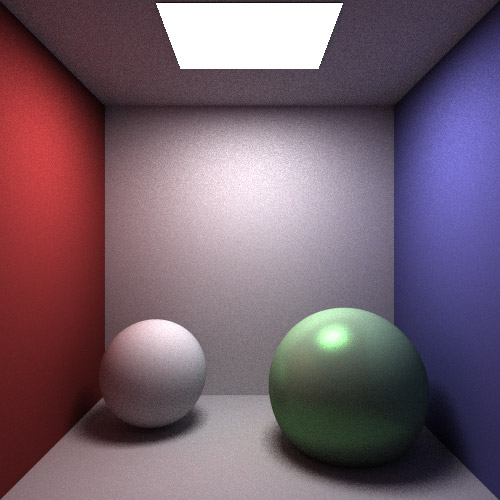
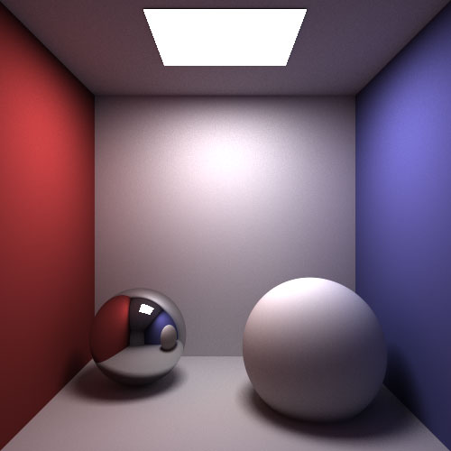
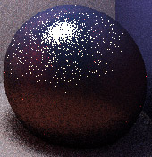
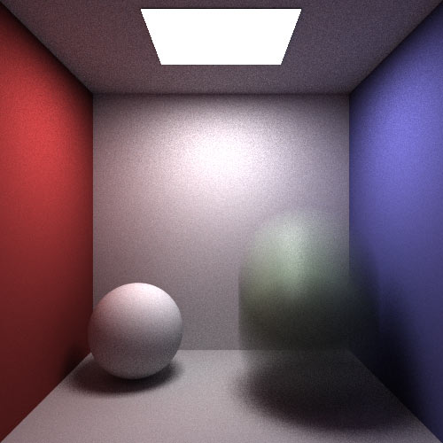

<!DOCTYPE html><html><head><title>gdehmlow - Monte Carlo Pathtracer</title><meta charset="utf-8" /><meta content="width=device-width, initial-scale=1, maximum-scale=1" name="viewport" /><link href="/assets/css/normalize.css" rel="stylesheet" /><link href="/assets/css/prettify.css" rel="stylesheet" /><link href="/assets/css/style.css" rel="stylesheet" /><link href="/assets/images/apple-touch-icon-144x144-precomposed.png" rel="apple-touch-icon-precomposed" sizes="144x144" /><link href="/assets/images/apple-touch-icon-114x114-precomposed.png" rel="apple-touch-icon-precomposed" sizes="114x114" /><link href="/assets/images/apple-touch-icon-72x72-precomposed.png" rel="apple-touch-icon-precomposed" sizes="72x72" /><link href="/assets/images/apple-touch-icon-57x57-precomposed.png" rel="apple-touch-icon-precomposed" /><link href="/favicon.ico" rel="shortcut icon" /></head></html><body><div class="wrapper"><div class="container home"><div class="top2"><div class="logo2"><a href="/"></a></div><a class="name" href="/"><h1><strong>Greg </strong>Dehmlow</h1></a><div class="clear"></div></div><hr /><h2>Monte Carlo Pathtracer</h2><style>
  .compareContrast a {
    display:block; width: 500px; height:500px; background-image: url('./directLighting.jpg');
  }

  .compareContrast a:hover {
    background-image: url('./totalLighting.jpg');
  }

  .mblurCompare a {
    display:block; width: 500px; height:500px; background-image: url('./mblur1.jpg');
  }

  .mblurCompare a:hover {
    background-image: url('./mblur2.jpg');
  }
</style>

<div class="row">
<div class="nine columns">
  
</div>
<div class="three columns">
  <p style="line-height: 1.3em; margin-bottom: 10px;"><strong>Samples per pixel:</strong><br /> 100</p>
  <p style="line-height: 1.3em; margin-bottom: 10px;"><strong>Time to render:</strong><br />~600s</p>
</div>
</div>

<h4 id="source-code">Source code</h4>

<p>View on Github <a href="https://github.com/gdehmlow/cs283-hw2">here</a> and click <a href="https://github.com/gdehmlow/cs283-hw2/archive/master.zip">here</a> to download. </p>

<h4 id="purpose">Purpose</h4>

<p>The goal of the pathtracer project was to extend my raytracing project from cs184 to include support for diffuse and specular interreflections as well as direct, reflective, and transmissive lighting, which produces more realistic and physically based renders. For example, in the image above, we see the red color of the wall is bleeding onto the diffuse sphere as well as some white being reflected from the ground.</p>

<hr />

<div class="row">
<div class="nine columns">
  
</div>
<div class="three columns">
  <p style="line-height: 1.3em; margin-bottom: 10px;"><strong>Samples per pixel:</strong><br /> 1000</p>
  <p style="line-height: 1.3em; margin-bottom: 10px;"><strong>Time to render:</strong><br />5836s</p>
</div>
</div>

<hr />

<h4 id="pixel-sampling">Pixel sampling</h4>

<p>Since we’re using Monte Carlo integration to render the scene, instead of shooting one ray per pixel, we’re shooting however many it takes for the scene to converge to a reasonable noise level (or more accurately, however many rays our patience can handle). I chose to shoot the rays randomly through their respective pixels, which helps with anti-aliasing.</p>

<h4 id="illumination">Illumination</h4>

<p>When the ray we shoot into the scene intersects a diffuse or glossy object, it “bounces” and generates another ray in a random direction. If we were to shoot infinity rays in the scene randomly, we would simulate all of the light paths. </p>

<p>Anyway, we need to account for the light at the surface for the current intersection, so we get the direct lighting at that point add that to our running color total. Important to note is that each ray has a weight (initially 1), and each successive bounce lowers that weight proportional to the reflectance of the surface material, which in turn lowers the contribution from the direct lighting at each successive point.</p>

<hr />

<div class="row">
<div class="nine columns compareContrast">
  <a></a>
</div>
<div class="three columns">
  <p><strong>Hover over the image</strong> to turn on indirect lighting.</p>

  <p style="line-height: 1.3em; margin-bottom: 10px;"><strong>Samples per pixel:</strong><br /> 10</p>
  <p style="line-height: 1.3em; margin-bottom: 10px;"><strong>Time to render:</strong><br />~60s (with indirect) <br />~3s (without indirect)</p>
</div>
</div>

<hr />

<h4 id="area-lights">Area Lights</h4>

<p>Since I’m shooting a bunch of rays through the same pixel, to handle area lights, all I did was shoot one ray (instead of many and averaging) randomly toward the light source to get its contribution at each intersection. This produces nice area lights when the number of samples per pixel gets higher (&gt;100) and it keeps things from slowing down too much.</p>

<h4 id="importance-sampling">Importance Sampling</h4>

<p></p>

<p>If we wanted to, for every surface, we could generate a random ray on the hemisphere oriented to the tangent of the intersection and that would work fine, especially for diffuse surfaces. But we know that for glossy surfaces, most of the energy at each intersection point comes from lobe oriented to the perfect reflected direction of light, so it would make sense to sample that area more highly. Since we’re using lambertian and phong brdfs, we sample accordingly. Jason Lawrence has a great writeup of it <a href="http://www.cs.virginia.edu/~jdl/importance.doc">here</a> (.doc). Thanks to a bug in my program at one point, I was able to verify it was working correctly (right).</p>

<p>For glossy surfaces we actually have to sample both specular and diffuse components of the brdf, so for each indirect ray per intersection we choose either to sample the cosine weighted hemisphere or the specular lobe with probability proportional to whichever one is bigger, and we weight each accordingly.</p>

<h4 id="russian-roulette">Russian Roulette</h4>

<p>After a few bounces, the indirect lighting starts to contribute a lot less to the total energy at a given intersection. But we can’t just cut the ray off, as that introduces bias. To get around this, we say that after the weight of the ray falls below a certain point, we will kill the ray with a certain probability p and weight the survivors by 1 / p. For the image above, p = .2 -&gt; 74s, p = .5 -&gt; 64s, and p = .01 -&gt; 60s.</p>

<h4 id="motion-blur">Motion Blur</h4>

<p>For my multidimensional integration, I chose to do motion blur. It was simple to implement: as we take more samples per pixel, we increment time t uniformly such that it starts at 0 and is 1 when we take our last sample for a pixel. When calculating the intersections with objects, t is passed along to determine the location of the object at that time. The sphere runs on a constant velocity path between two points.</p>

<p>The nice thing about this scheme is that it really adds nothing to cost of computation. The ugly thing is what can be seen below: if you don’t take that many samples, you can actually see a snapshot of the ball at each sample. </p>

<hr />

<div class="row">
<div class="nine columns mblurCompare">
  <a></a>
</div>
<div class="three columns">
  <p><strong>Hover over the image</strong> to see the effects of higher temporal sampling.</p>

  <p style="line-height: 1.3em; margin-bottom: 10px;"><strong>Samples per pixel:</strong><br /> 10 / 100</p>
  <p style="line-height: 1.3em; margin-bottom: 10px;"><strong>Time to render:</strong><br />~60s / ~650s</p>
</div>
</div>

<div class="row">
<div class="nine columns">
  
</div>
<div class="three columns">
  <p style="line-height: 1.3em; margin-bottom: 10px;"><strong>Samples per pixel:</strong><br /> 100</p>
  <p style="line-height: 1.3em; margin-bottom: 10px;"><strong>Time to render:</strong><br />~650s</p>
</div>
</div>
<span class="end">■</span><div class="clear"></div></div></div><script src="//ajax.googleapis.com/ajax/libs/jquery/1.9.1/jquery.min.js" type="text/javascript"><script src="/assets/js/prettify.js" type="text/javascript"></script><script type="text/javascript">$(function() {
  $('pre').addClass('prettyprint');
  prettyPrint();
})</script></script></body>